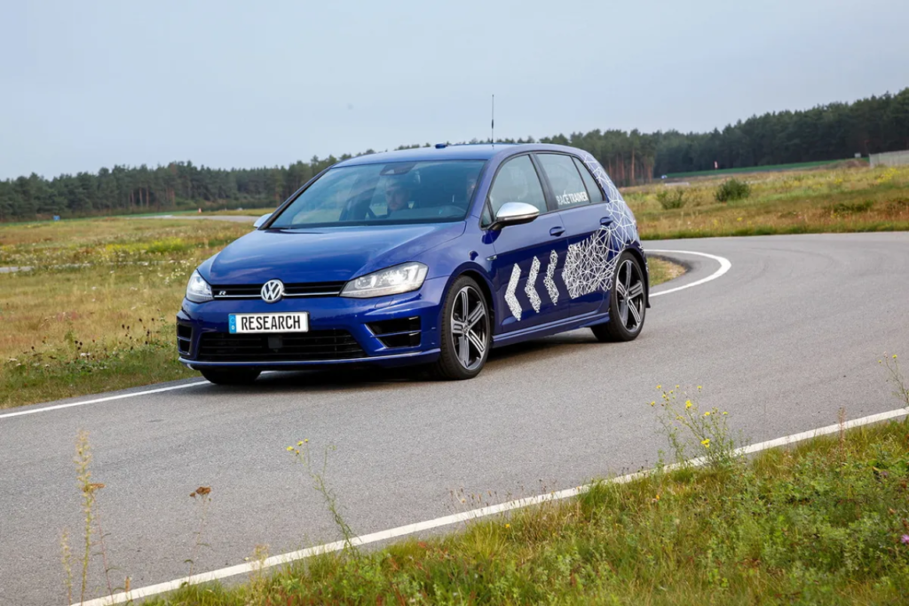
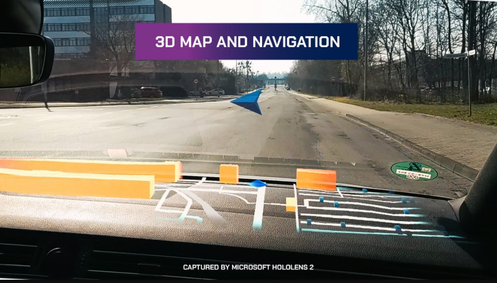
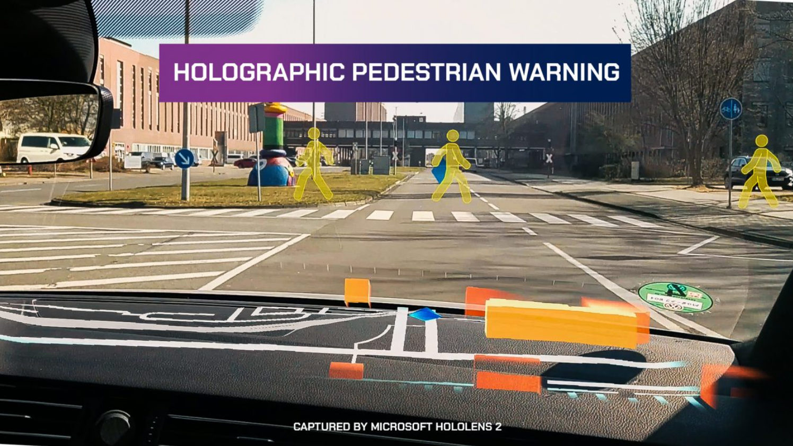
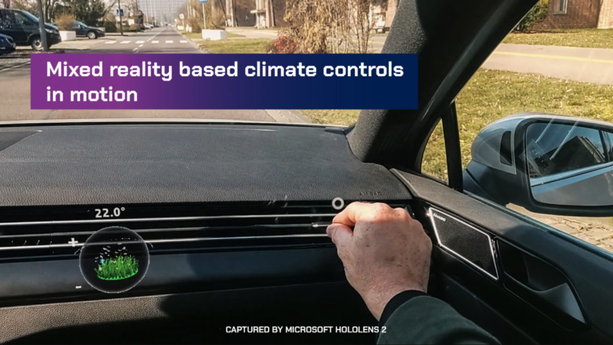

On 2022-05-17

Microsoft has officially announced a new AR GPS navigation system feature named "Moving Platform" for HoloLens 2, which is designed to allow the augmented reality headset to work in moving places like cars. This system solves a problem that Microsoft had previously encountered with the helmet sensors. The helmet enhancement was developed in conjunction with German automaker Volkswagen, which experimented with using the helmet as a head-up display in its vehicles.
As Microsoft explains, its augmented reality headset tracks movement using a combination of sensors, camera, and an inertial measurement unit (which typically includes accelerometers and gyroscopes). But in a car, these sensors can conflict. This is because the headset detects motion but sees a static environment, which made users sick.
Volkswagen had already carried out research on navigation in augmented reality, in particular in 2015 with its “Race Trainer” project which combined AR technology and autonomous vehicles to teach drivers the basics of piloting. However, the manufacturer has abandoned the follow-up of this project.
It was finally in 2018 that Volkswagen and Microsoft began collaborating to solve the sensor problem and they developed a prototype system that allowed a car to display real-time information on a connected helmet.
The system makes it possible to place virtual objects inside the vehicle with, for example, a virtual map on the dashboard with navigation arrows that appear at intersections. It also makes it possible to display information outside the vehicle such as an upcoming pedestrian crossing.

The direct communication of the AR headset with vehicle data makes it possible to adjust the temperature or control the intensity and direction of the airflow by gesture.
Volkswagen already offers vehicle models that incorporate certain augmented reality elements such as the head-up display that projects car data including current speed and navigation instructions onto the windshield, which allows the driver not to take your eyes off the road.
This project therefore aims to revolutionize the driving experience, whether for the practical and safety aspect (virtual map on the dashboard, 3D modeling of potential dangers, etc.) but also for the comfort it can bring with virtual control of the temperature in the passenger compartment, for example.
Sources :